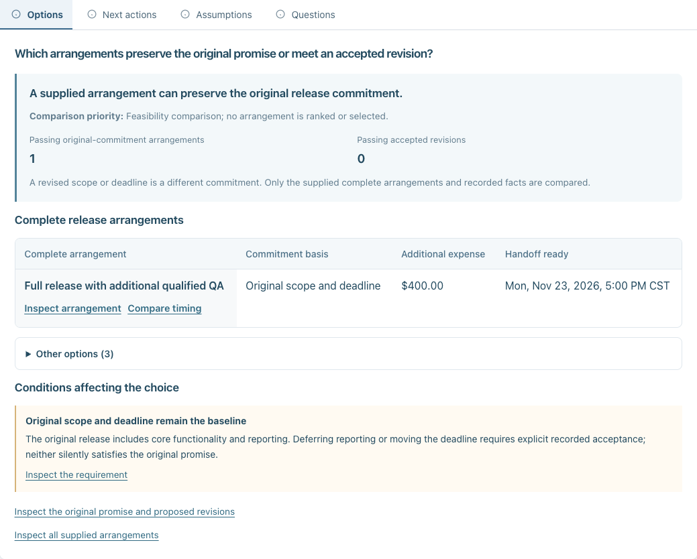

Repair a Disrupted Commitment
What can we still deliver when capacity disappears?
Compare a missing cook with a QA shortfall to see how Decision Lab assesses complete repairs, and what changes between the two applications.
- Restaurant staffing
- Software delivery

